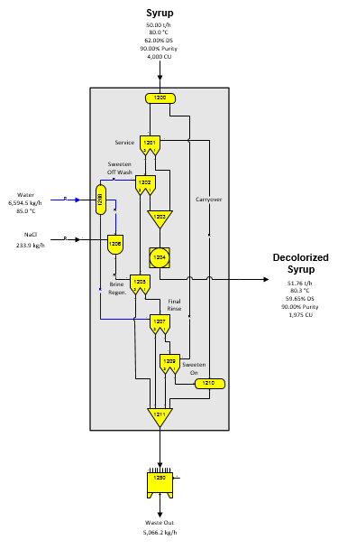

The flow diagram for the Ion Exchange example of a generic ion exchange model for decolorization of syrup is shown in the figure above. Separator stations are used to control the flow of material from one stage to the next for a complete ion exchange system cycle. The material remaining in the column, when changing stages is the carryover that goes to the next stage. This is shown as a bed volume of material in above diagram; however, it may be either more, or less, than one bed volume depending on the design of the columns and the system. The model shown is a simple model for decolorization. More complicated models can be built for demineralization, juice softening, or other ion exchange processes. A grouping of these stations is provided on the "Equipment - miscellaneous" stencil.
Solubility coefficients for both output flows from a separator are always the same as the coefficients for the input flow; therefore, if the melassigenic components in the flow streams are shifted from one flow to the other, the solubility coefficients should be reset for the output flows from the separator by using a reactor station (see station no. 1204 above) on the affected flows to control the solubility coefficients to their proper values. For example, if juice softening is used where Ca ions are exchanged for Na ions in the juice, the melassigenic components in the juice will change. Therefore, the solubility coefficients for the juice should change to reflect its new solubility characteristics.